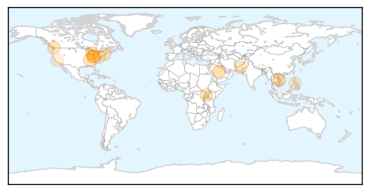
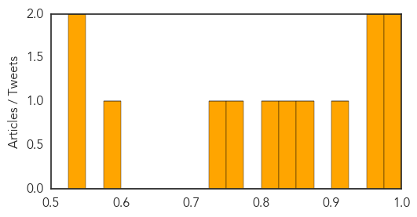
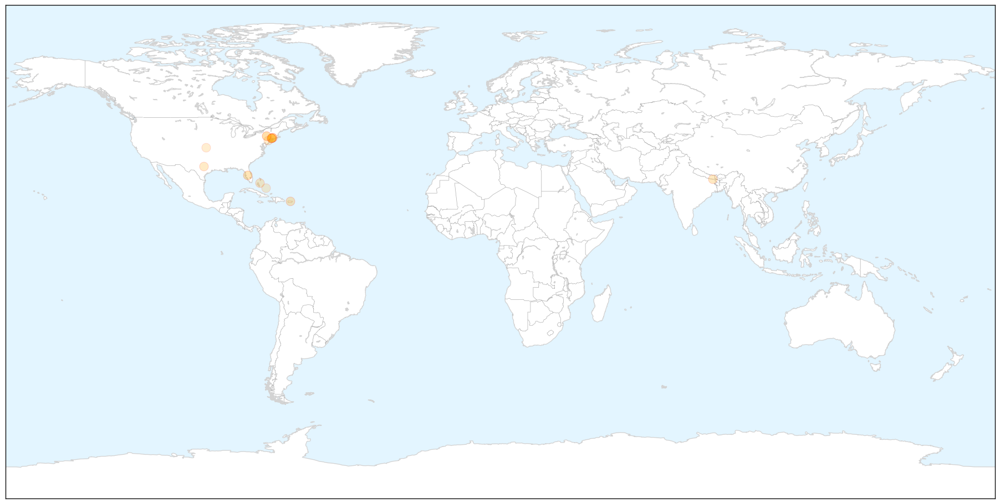

Measles
30-Day Web Trend
2 alerts, 0 warnings

30-Day Twitter Trend
0 alerts, 0 warnings

Article Locations
Article Confidences
Top Articles:
- 0.999
- Second MERS case confirmed in Netherlands
- 0.986
- Outbreak in Ohio adds to 18-year high of measles cases in U.S.
- 0.964
- Ohio measles outbreak spreads to record level
- 0.963
- Detroit Free Press
- 0.903
- Measles alert at Stuartholme Catholic girls’ school
- 0.866
- Epidemiologist Says Measles Outbreak Under Control
- 0.843
- Is measles cure far off for other cancer patients?
- 0.811
- Chickenpox hits young cancer patient, despite vaccination
- 0.766
- Pakistan: Is Pakistan losing the battle against measles?
- 0.734
- Officials confirm case of measles in Bay State
- 0.589
- Valley Morning Star : Autism
- 0.545
- Doctors urging East Tennesseans to get measles shots
- 0.543
- Modified measles virus targets and destroys cancer, study says
Top Tweets:
-
No tweets found for May 16, 2014
Hepatitis
30-Day Web Trend
1 alerts, 0 warnings

30-Day Twitter Trend
0 alerts, 0 warnings

Article Locations

X

Article Confidences

Top Articles:
- 0.854
- Service members required to get hepatitis B immunization
- 0.779
- Insulin pens: 3,100 Hospital Patients At Risk Of Disease After Misuse Of Insulin Pens
- 0.751
- Griffin Hospital to 3,100 patients: Get tested for hepatitis and HIV
- 0.747
- KFVS12 News & Weather Cape Girardeau, Carbondale, Poplar Bluff
- 0.715
- Oli, Nepal getting better
- 0.696
- LETTER: Griffin Hospital Alerts Patients
- 0.666
- Hospital Mistake Leaves 3,000 Patients At Risk For HIV Infection
- 0.661
- More than 3,100 diabetes patients exposed to HIV risk
- 0.660
- Hospital Warns Of Possibly Tainted Insulin Pens « CBS Connecticut
- 0.658
- Griffin patients warned about insulin pens Republican American
- 0.640
- Connecticut hospital warns of insulin pen problem
- 0.594
- Griffin Hospital says device misuse could have infected patients
- 0.593
- Insulin pen misuse could have infected patients with diseases
- 0.539
- Insulin pen misuse could have infected patients with diseases
- 0.539
- Insulin pen misuse could have infected patients with diseases
- 0.531
- Griffin Hospital: Insulin pen misuse could have infected patients with diseases
Top Tweets:
-
No tweets found for May 16, 2014